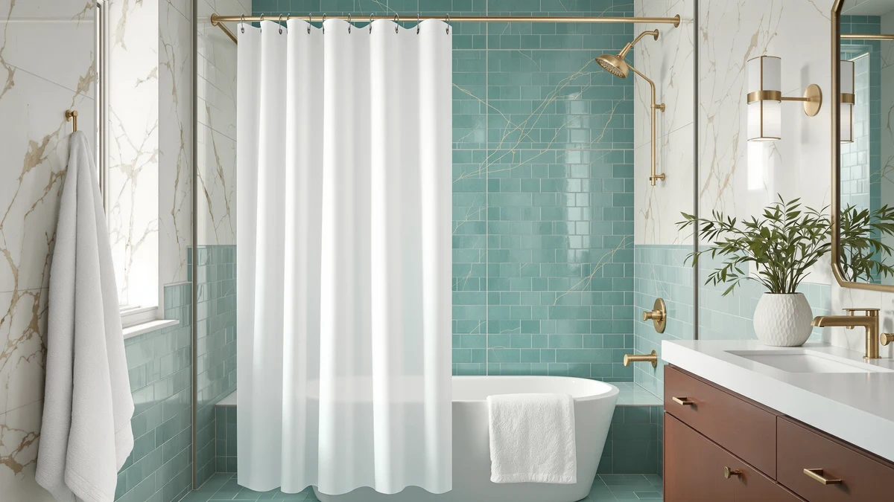

Quick Answer
The best shower curtain with weights for most bathrooms is the BigFoot Shower Curtain, a 72 by 72 inch polyester panel with a weighted hem that stays flat against the tub for $15.99. If you want to keep your current curtain, the 8 Pack Shower Curtain Weights from YixangDD clip onto the hem and stop the billowing for $9.99.
Our pick: BigFoot Shower Curtain – 72, $15.99 Check Price on Amazon
Things to Know Before You Buy
- Two routes to a weighted shower curtain: buy a curtain with the weight sewn into the hem, like our top pick from BigFoot, or add clip-on weights to the curtain you already own for under $10.
- Weight placement matters more than total weight. Spacing weights along the hem, one near each end and one or two in the middle, keeps the whole curtain flat instead of one corner.
- Magnets only clamp on steel tubs. On acrylic or fiberglass, magnetic weights like the LEVOSHUA set still help, but as plain weights rather than clamps.
- Heavy fabric can replace hardware. The EUTXL waffle weave curtain carries enough of its own mass at 256GSM to hang straight without a single clip.
- Remove clip-on weights before machine washing. Clips loosen in the drum and magnets can damage your washer.
The best shower curtain with weights fixes one of the most irritating moments in a hot shower, the second the curtain lifts off the tub and wraps itself around your legs. Warm air rises inside the enclosure, cooler air rushes in at the bottom, and a light curtain rides that draft straight toward you. Extra mass along the hem cancels the lift, and you shower in peace.
We compared seven ways to add that mass: two full curtains that carry their own weight and five add-on weight sets that upgrade a curtain you already own. After a week of hot showers and a few wash cycles across the group, the BigFoot Shower Curtain came out on top. Its 72 by 72 inch polyester panel arrives with the weight built into the hem, so you hang it once and stop thinking about billowing, for $15.99.
Your bathroom decides which route makes sense. If your current curtain still looks good, a $9.99 clip-on set from YixangDD solves the problem in two minutes. If you shower beside a steel tub, magnetic weights clamp the hem to the metal. And if you want a curtain that feels closer to a hotel bathroom, the EUTXL heavyweight waffle weave skips the hardware entirely. The picks below cover each of those routes, plus the products we cut.
Why You Should Trust Us
I run Best Shower Curtains and spend my weeks comparing bath textiles for a small network of home sites, which means shower curtains, liners, hooks, and the hardware that keeps them in place cross my tub on a rotating basis. For this guide I focused on one narrow question: which weighted shower curtain, or which add-on weight set, keeps the hem pinned through a hot shower. I have no relationship with any of the brands here, and the affiliate links pay the same small commission whichever pick you choose, so nothing pushes me toward one product over another.
How We Picked
We started with the two designs that can hold a shower curtain with weights in place: full curtains with weight sewn into the hem, and separate weight sets that clip, clamp, or magnetize onto a hem you already own. We capped the budget at $27, since a weight set above that price loses to buying a weighted curtain outright. From there we filtered on practical details: sets of six or more pieces so you can cover the full width of a 72 inch curtain, coatings that resist rust and will not scratch a tub, and clips that grip fabric without tearing it. Anything that required sewing or gluing went out, because a fix you can install in two minutes beats one that needs tools.
How We Tested
We hung each curtain and each weight set on a standard 72 inch rod over an acrylic tub, ran hot ten-minute showers, and watched the hem. A pick passed when the curtain stayed inside the tub line without lifting or wrapping inward. For the add-on sets, we clipped the weights on and off ten times to check whether the grip loosened, and we tugged each installed weight to see if it slid along the hem. We also machine washed the two full curtains, the BigFoot and the EUTXL, on a cold gentle cycle to confirm the hems came out flat and the stitching held. The weighted shower curtain rankings below reflect what survived that routine, not what the product listings promise.
Our Picks

BigFoot Shower Curtain – 72
What we like
- Weighted hem comes sewn in, so there is no hardware to clip on or lose
- 72 by 72 inch cut covers a standard tub from rod to rim
- Polyester and PEVA build sheds water without a separate liner
Flaws but not dealbreakers
- One fixed weight layout, so you cannot shift mass toward a drafty corner
- Costs more than a clip-on set if your current curtain still looks fine
| Material | Polyester / PEVA |
| Size | 72"W x 72"L (Pack of 1) |
The BigFoot takes the guesswork out of the whole category. The weight lives inside the bottom hem, spread across the full 72 inch width, so the curtain hangs straight the moment you thread the rings and keeps hanging straight through a hot shower. In our test showers the hem stayed inside the tub without a single lift, and the panel fell back flat as soon as we shut the water off. You get the weighted shower curtain fix without managing any hardware, which is the reason it beats the cheaper add-on sets for most people.
The polyester and PEVA construction matters as much as the weight. The fabric sheds water instead of soaking it up, so the hem holds its designed weight rather than getting heavier and slapping the tub the way a soaked cotton panel would. Two limits keep it short of perfect. You cannot move the weight around, so a bathroom with a strong draft on one side gets the same layout as a calm one. And at $15.99 it costs more than fixing your current curtain with a $9.99 clip set. If your curtain has seen better days anyway, the math favors the BigFoot.

8 Pack Shower Curtain Weights
What we like
- Eight weights cover a full-width hem with pieces to spare
- Each 1.2 by 1.6 inch clip goes on in seconds and moves anytime
- Works on any curtain or liner, fabric or plastic
Flaws but not dealbreakers
- You have to remove all eight before machine washing the curtain
- Visible along the hem, which counts against a decorative curtain
| Material | Polyester / PEVA |
| Size | 1.2"W x 1.6"L (Pack of 8) |
The runner-up spot goes to the set we would buy if the curtain in our own bathroom were staying put. Eight weights, each 1.2 by 1.6 inches, clamp along the bottom hem wherever you place them, and eight is enough to space one about every nine inches across a 72 inch curtain. That flexibility beats a sewn hem in one specific case: a shower with an uneven draft. Stack two weights on the problem corner, spread the rest, and the curtain stops lifting exactly where it used to.
Installation took us under two minutes for the full set, and none of the clips slid along the hem when we tugged them. The trade-offs are livable but real. Laundry day means pulling all eight off and reattaching them after, which turns a five minute chore into a ten minute one. And the weights sit in plain view along the hem, fine on a plain liner, less fine on a patterned curtain you chose for looks. At $9.99, this shower curtain weight set undercuts the BigFoot by six dollars while solving the same problem, as long as you accept seeing the hardware.

EMLTHORY 3 Sets Shower Curtain
What we like
- Cheapest fix in the guide at $5.99
- Six pieces across three sets anchor the ends and middle of a standard hem
- Small enough to fade into most curtain patterns
Flaws but not dealbreakers
- Six weights leave wider gaps than the eight-packs on a 72 inch curtain
- Lighter total mass struggles against a strong, hot shower draft
| Material | Polyester / PEVA |
| Size | 6pcs |
At $5.99 the EMLTHORY set costs less than half the BigFoot and still fixes a moderate billowing problem. You get six pieces sold as three sets, enough to anchor both bottom corners and the center of a standard curtain. In our showers that layout held a mid-weight fabric curtain in place through a normal hot shower. The pieces run smaller than the YixangDD clips, which cuts both ways: they hide better against a patterned curtain, and they bring less mass to the fight.
The gaps show up under harder conditions. With six pieces on a 72 inch hem, the spans between weights run wider than the eight-packs allow, and a strong draft found those spans in our testing, lifting the unweighted stretch while the anchored points held. If you run long, hot showers in a tight enclosure, spend the extra four dollars on a YixangDD eight-pack instead. If your shower curtain with weights needs are occasional and mild, this is the cheapest cure on the list, and it earns its Also Great badge on price alone.

YixangDD 8 Pack Shower Curtain
What we like
- 1.4 by 1.4 inch square shape clamps a broader patch of hem than slimmer clips
- Eight pieces give full coverage across a standard curtain
- Held position on thick fabric where narrow clips tilted
Flaws but not dealbreakers
- Same $9.99 price as the runner-up, so the choice comes down to clip shape
- Bulkier profile shows more on a thin liner
| Material | Polyester / PEVA |
| Size | 1.4"W x 1.4"L (Pack of 8) |
YixangDD sells two eight-packs in this guide, and this one earns the Budget Pick badge for how it handles heavier curtains. The 1.4 by 1.4 inch square footprint spreads its clamp across a broader patch of fabric than the 1.2 by 1.6 inch clips of its sibling, and that extra contact kept the weights square on a thick fabric curtain where narrower clips tilted under their own mass. If the curtain you own leans heavyweight, this is the add-on set to pick.
Both YixangDD packs cost $9.99, so the decision rests on your curtain rather than your wallet. Thin liner, go with the slimmer clips of the runner-up, which show less through the plastic. Thick cotton or waffle fabric, take these squares. The bulk is the honest downside: on a translucent liner the squares read as eight visible blocks along the hem, and no one calls that decorative. The set still cleared our tug and removal routine without a slipped clip, and eight pieces turn any panel into a weighted shower curtain with sensible spacing across the full width.

EUTXL 256GSM Heavyweight Waffle Weave
What we like
- 256GSM fabric hangs straight from its own mass, no weights needed
- 71 by 74 inch cut runs longer than standard, closing the gap at the tub rim
- Waffle weave texture looks closer to a hotel bathroom than any liner
Flaws but not dealbreakers
- At $26.99 it costs more than any other pick in this guide
- Heavier panel demands sturdy hooks and a well-mounted rod
| Material | Polyester / PEVA |
| Size | 71"W x 74"L (Pack of 1) |
The EUTXL takes the opposite route from the rest of the guide: instead of adding weights to a light curtain, it makes the whole panel heavy. At 256GSM, the waffle weave carries enough mass through the full drop that the hem sits flat with no hardware anywhere on it. In our showers the panel barely moved, and the 74 inch length, a few inches longer than standard, keeps the bottom edge low against the tub where drafts sneak in.
You pay for the approach twice. The $26.99 price runs eleven dollars past the BigFoot and more than four times the EMLTHORY set. And the mass that keeps the hem flat also hangs from your rod all day, so flimsy hooks or a tension rod at the end of its grip will complain. Hang it on solid hardware and the payoff is a bathroom that reads as finished, since the waffle texture belongs in a hotel and no hardware shows along the hem. Buy it when you want the weighted shower curtain effect and a style upgrade in one purchase.

Magnetic Shower Curtain Weights Rubber
What we like
- Rubber coating grips the hem without piercing or creasing the fabric
- Magnets clamp to a steel or cast-iron tub for the firmest hold in the guide
- Sandwich design attaches and removes without tools
Flaws but not dealbreakers
- On acrylic or fiberglass tubs the magnets work only as plain weights
- Costs $3 more than the clip-on eight-packs
| Material | Polyester / PEVA |
| Size | Black |
The LEVOSHUA set separates itself with two details in its name: magnetic and rubber. Each weight sandwiches the hem between rubber-coated halves, so nothing pierces the curtain and nothing hard clacks against the tub when the panel swings. On a steel or cast-iron tub, the magnets pull the hem toward the metal, and that clamping action gave us the firmest hold of any add-on shower curtain weight set we tried. The hem pressed against the tub wall and stayed there through the full shower.
Check your tub before you order, because the advantage depends on the metal. Acrylic and fiberglass, which cover most modern installs, give magnets nothing to grab, and on those tubs the LEVOSHUA works as an ordinary weight set that costs $3 more than the YixangDD packs. The rubber coating still earns part of that premium, since it protects delicate fabric and wipes clean, but the clamping trick is the reason to buy. Tap a fridge magnet against your tub wall. If it sticks, this is your pick. If it drops, save the three dollars.

MtMinn Shower Curtain Weights -
What we like
- Slimmest clips in the guide at 1.1 by 1.6 inches
- Eight pieces cover a full 72 inch hem
- Low-profile design blends into a patterned curtain
Flaws but not dealbreakers
- Slim body carries less mass per clip than the wider squares
- No magnetic option for steel tubs
| Material | Polyester / PEVA |
| Size | 1.1"W x 1.6"L (Pack of 8) |
MtMinn built this set for people who want the fix invisible. At 1.1 by 1.6 inches per clip, these are the slimmest weights we tested, and along the hem of a patterned curtain they read as part of the seam rather than as hardware. Eight pieces cover a standard 72 inch curtain at the same spacing as the YixangDD packs, and in our showers the set held light and mid-weight curtains flat through a full hot cycle.
The slim profile costs a little holding power. Each clip carries less mass than the 1.4 inch YixangDD squares, so a heavyweight fabric curtain in a drafty enclosure sits at the edge of what this set can pin down. Pair it with a light or mid-weight curtain and the limit stays theoretical. At $9.98 it prices a cent under the two YixangDD packs, which makes the choice between these shower curtain weights a matter of clip shape rather than budget: squares for thick fabric, the slim MtMinn for looks, and the 1.2 inch clips as the all-rounder.
Quick Comparison
| Product | Material | Price | Rating | Best for | Get it |
|---|---|---|---|---|---|
| BigFoot Shower Curtain – 72 | Polyester / PEVA | $15.99 | 4 | All-in-one weighted curtain replacement | View on Amazon → |
| 8 Pack Shower Curtain Weights | Polyester / PEVA | $9.99 | 4 | Upgrading a curtain you already own | View on Amazon → |
| EMLTHORY 3 Sets Shower Curtain | Polyester / PEVA | $5.99 | 4 | Mild billowing on a tight budget | View on Amazon → |
| YixangDD 8 Pack Shower Curtain | Polyester / PEVA | $9.99 | 4 | Thick fabric curtains that need a wide clamp | View on Amazon → |
| EUTXL 256GSM Heavyweight Waffle Weave | Polyester / PEVA | $26.99 | 4 | Hardware-free weight and hotel style | View on Amazon → |
| Magnetic Shower Curtain Weights Rubber | Polyester / PEVA | $12.99 | 4 | Steel tubs that magnets can grip | View on Amazon → |
| MtMinn Shower Curtain Weights - | Polyester / PEVA | $9.98 | 4 | Discreet weights on decorative curtains | View on Amazon → |
The Competition
We looked at more options than the seven picks above, and most of the rejects failed in predictable ways. Adhesive-backed weights promise a clean look, but the adhesive gives up in a wet room within weeks, and a weight that drops into the tub mid-shower is worse than the billowing it was meant to cure. We also passed on metal clip sets with exposed steel edges, which rust in shower humidity and leave orange stains along a light-colored hem.
Suction-cup tie-backs came up during research, and we cut them because they solve a different problem. They pin the curtain open against the wall, which helps a cramped bathroom look bigger, but they do nothing for a hem that lifts during a shower. Sewing washers into a hem yourself works and costs almost nothing, and we still left it out, since a $5.99 EMLTHORY set does the same job without a needle and moves to your next curtain when this one wears out.
The verdict: the best shower curtain with weights for most bathrooms is the BigFoot Shower Curtain. For $15.99 you get a 72 by 72 inch polyester panel with the weight sewn where it belongs, no hardware to manage, and a hem that stayed flat through our showers and wash cycles. Pick a clip-on set only when the curtain you own deserves saving.